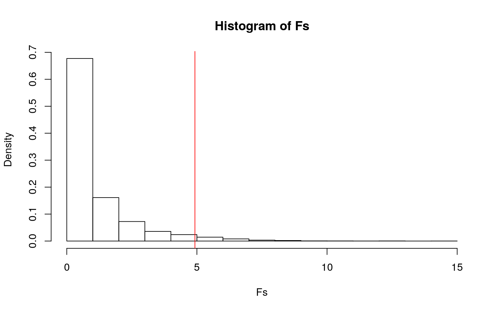
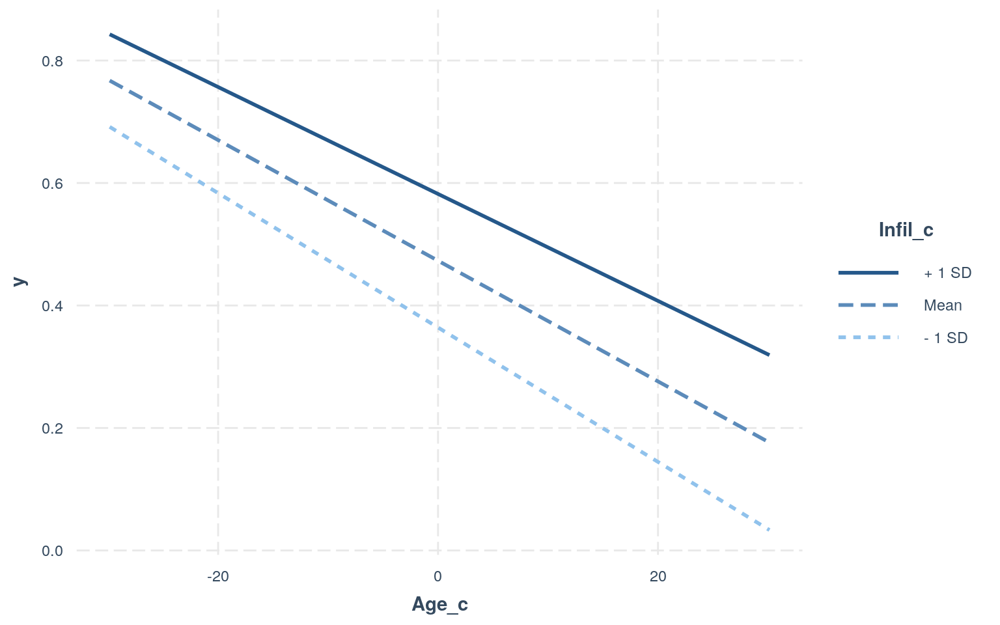
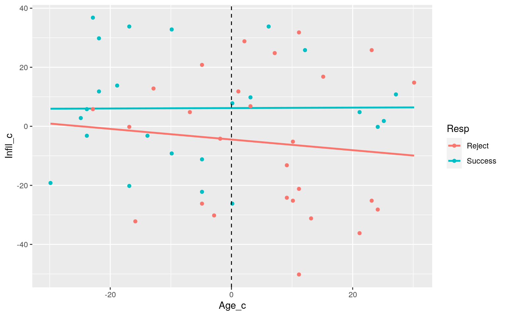
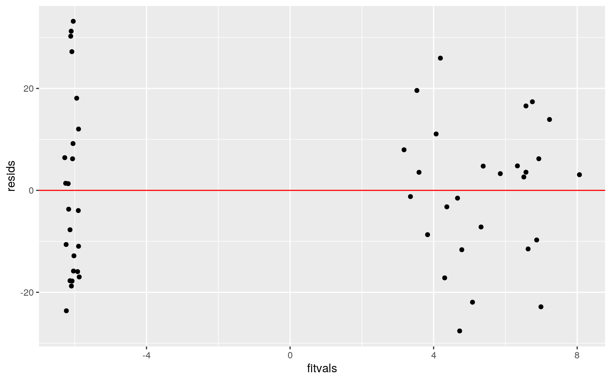
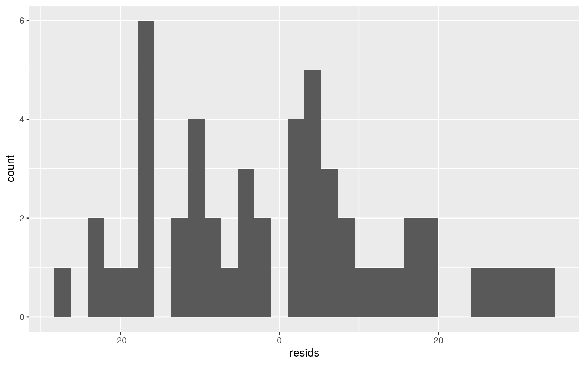
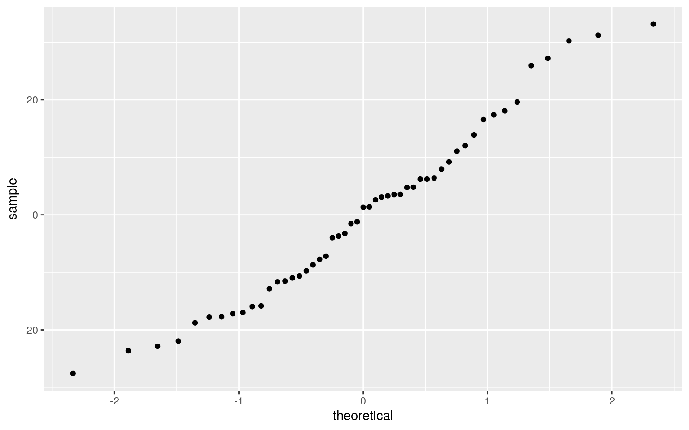
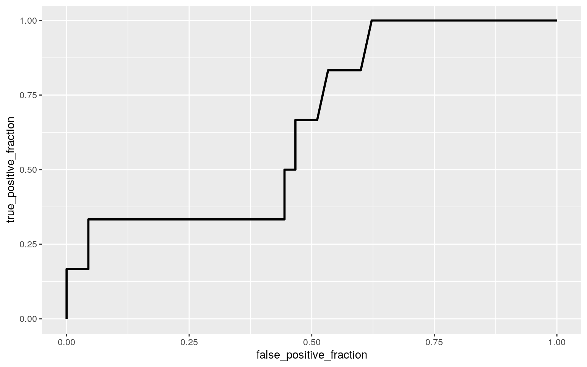
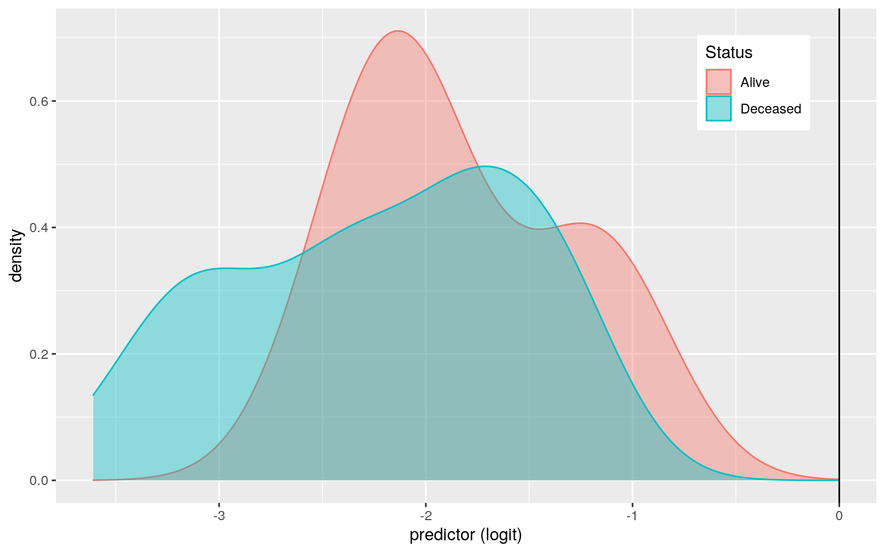

library(readr)
library(dplyr)
Leukemia <- read_csv("Leukemia.csv")
Leukemia<-Leukemia%>%select(-X1)
head(Leukemia)## # A tibble: 6 x 9
## Age Smear Infil Index Blasts Temp Resp Time Status
## <dbl> <dbl> <dbl> <dbl> <dbl> <dbl> <dbl> <dbl> <dbl>
## 1 20 78 39 7 0.6 990 1 18 0
## 2 25 64 61 16 35 1030 1 31 1
## 3 26 61 55 12 7.5 982 1 31 0
## 4 26 64 64 16 21 1000 1 31 0
## 5 27 95 95 6 7.5 980 1 36 0
## 6 27 80 64 8 0.6 1010 0 1 0The Leukemia dataset that I am using for this project contains 9 variables and 51 observations. This dataset contains information regarding treatment results for leukemia patients. The variable "age" represents the age of diagnosis of the patient, and "time" represents the survival time after being diagnosed, as measured in months.The "smear" variable represents the differential percentage of blasts. Blasts are imperative to the diagnosis of leukemia as having 20% or more blasts in the bone marrow or blood means a patient has the acute leukemia diagnosis.The "blasts" variable is a record of the absolute number of blasts for each patient. The variable "infil" returns the percentage of absolute marrow leukemia infiltrate, and "index" is the percentage labeling index of the plasma leukemia cells in the bone marrow. The "temp" variable is a measure of the highest temperature recorded of the patient prior to their treatment. "Resp" refers to whether the patient successfully responded to the treatment, with one implying the treatment was successful, and zero suggesting a failed response. The "status" variable is representative of whether the patient survived this diagnosis or not, with one meaning survival and zero being that they passed away.
set.seed(1234)
Leukemia<-Leukemia %>% mutate(Resp=recode(Resp, "1"="Success", "0"="Reject"))
man1<-manova(cbind(Age,Smear,Infil,Index,Blasts,Temp,Time,Status)~Resp, data=Leukemia)
summary(man1)## Df Pillai approx F num Df den Df Pr(>F)
## Resp 1 0.71042 12.88 8 42 3.821e-09 ***
## Residuals 49
## ---
## Signif. codes: 0 '***' 0.001 '**' 0.01 '*' 0.05 '.' 0.1
' ' 1summary.aov(man1) ## Response Age :
## Df Sum Sq Mean Sq F value Pr(>F)
## Resp 1 1670.9 1670.90 6.8461 0.01178 *
## Residuals 49 11959.1 244.06
## ---
## Signif. codes: 0 '***' 0.001 '**' 0.01 '*' 0.05 '.' 0.1
' ' 1
##
## Response Smear :
## Df Sum Sq Mean Sq F value Pr(>F)
## Resp 1 858 858.01 2.3808 0.1293
## Residuals 49 17659 360.38
##
## Response Infil :
## Df Sum Sq Mean Sq F value Pr(>F)
## Resp 1 1707.5 1707.52 3.6958 0.06037 .
## Residuals 49 22638.5 462.01
## ---
## Signif. codes: 0 '***' 0.001 '**' 0.01 '*' 0.05 '.' 0.1
' ' 1
##
## Response Index :
## Df Sum Sq Mean Sq F value Pr(>F)
## Resp 1 271.24 271.24 15.333 0.0002787 ***
## Residuals 49 866.80 17.69
## ---
## Signif. codes: 0 '***' 0.001 '**' 0.01 '*' 0.05 '.' 0.1
' ' 1
##
## Response Blasts :
## Df Sum Sq Mean Sq F value Pr(>F)
## Resp 1 593.7 593.70 1.8886 0.1756
## Residuals 49 15403.9 314.36
##
## Response Temp :
## Df Sum Sq Mean Sq F value Pr(>F)
## Resp 1 807.5 807.54 3.6938 0.06044 .
## Residuals 49 10712.5 218.62
## ---
## Signif. codes: 0 '***' 0.001 '**' 0.01 '*' 0.05 '.' 0.1
' ' 1
##
## Response Time :
## Df Sum Sq Mean Sq F value Pr(>F)
## Resp 1 4586.8 4586.8 69.583 5.765e-11 ***
## Residuals 49 3230.0 65.9
## ---
## Signif. codes: 0 '***' 0.001 '**' 0.01 '*' 0.05 '.' 0.1
' ' 1
##
## Response Status :
## Df Sum Sq Mean Sq F value Pr(>F)
## Resp 1 0.7941 0.79412 8.6471 0.004988 **
## Residuals 49 4.5000 0.09184
## ---
## Signif. codes: 0 '***' 0.001 '**' 0.01 '*' 0.05 '.' 0.1
' ' 1Leukemia%>% group_by(Resp)%>% summarize(mean(Age), mean(Smear), mean(Infil), mean(Index), mean(Blasts), mean(Temp), mean(Time), mean(Status))## # A tibble: 2 x 9
## Resp `mean(Age)` `mean(Smear)` `mean(Infil)`
`mean(Index)` `mean(Blasts)` `mean(Temp)`
## <chr> <dbl> <dbl> <dbl> <dbl> <dbl> <dbl>
## 1 Reje… 55.3 62.1 52.7 7.63 6.15 999.
## 2 Succ… 43.8 70.3 64.3 12.2 13.0 992.
## # … with 2 more variables: `mean(Time)` <dbl>,
`mean(Status)` <dbl>pairwise.t.test(Leukemia$Age, Leukemia$Resp, p.adj = "none")##
## Pairwise comparisons using t tests with pooled SD
##
## data: Leukemia$Age and Leukemia$Resp
##
## Reject
## Success 0.012
##
## P value adjustment method: nonepairwise.t.test(Leukemia$Index, Leukemia$Resp, p.adj = "none")##
## Pairwise comparisons using t tests with pooled SD
##
## data: Leukemia$Index and Leukemia$Resp
##
## Reject
## Success 0.00028
##
## P value adjustment method: nonepairwise.t.test(Leukemia$Time, Leukemia$Resp, p.adj = "none")##
## Pairwise comparisons using t tests with pooled SD
##
## data: Leukemia$Time and Leukemia$Resp
##
## Reject
## Success 5.8e-11
##
## P value adjustment method: nonepairwise.t.test(Leukemia$Status, Leukemia$Resp, p.adj = "none")##
## Pairwise comparisons using t tests with pooled SD
##
## data: Leukemia$Status and Leukemia$Resp
##
## Reject
## Success 0.005
##
## P value adjustment method: none1-(.95^6) #The probability of having at least one Type 1 Error## [1] 0.2649081.05/6 #Bonferroni α Method## [1] 0.008333333library(rstatix)
group <- Leukemia$Resp
DVs <- Leukemia %>% select(Age,Smear,Infil,Index,Blasts,Temp,Time)
sapply(split(DVs,group), mshapiro_test)#Tests multivariate normality for each group (null: assumption met)## Reject Success
## statistic 0.7167846 0.5022186
## p.value 6.696333e-06 5.925479e-08I ran a total of 6 tests including one MANOVA and one ANOVA test on the dataset, in addition to 4 pairwise t-tests. A one-way MANOVA was conducted to determine the effect of the patients’ response to the treatment (whether it was successful or if their body rejected it) on eight dependent variables.The MANOVA returned a significant p-value of 3.821e-09, suggesting that significant differences were found among the response to treatment for at least one of the dependent variables. Similarly after running the univariate ANOVA, the test returned significant p-values for the following variables of age, index, time, and status. F(1, 49) = 6.846, p < .05 for age, F(1, 49) = 15.333, p < .001 for index, F(1, 49) = 69.583, p < .001 for time, and F(1, 49) = 8.647, p < .01 for status respectively. To correct for multiple comparisons since running multiple tests inflates the overall error rate, the probability of having at least one type 1 error was calculated. The type 1 error rate for this data was found to be 0.265. To ensure that the overall error rate remained at 5%, the Bonferroni value of correction was calculated as being .00833 to adjust for the significance level of each test used. Using this new value, the previous variable of age was no longer significant. I ran further post hoc analysis by conducting pairwise comparisons on the variables that returned significance. This was an additional step to demonstrate my understanding of the pairwise t-test, however this was not necessary to analyze the data as the reference variable (response to treatment) only has two groups. The MANOVA test has multiple assumptions, such as multivariate normality and homogeneity of covariance matrices, that must be tested. To check these assumptions I tested for multivariate normality for each of the variables. This returned p-values less than 0.05 which means that the main assumptions including multivariate normality were violated. This is not an unusual finding, as running MANOVAS typically violate at least one assumption.
set.seed(1234)
summary(aov(Age~Status,data=Leukemia))## Df Sum Sq Mean Sq F value Pr(>F)
## Status 1 1245 1244.7 4.924 0.0311 *
## Residuals 49 12385 252.8
## ---
## Signif. codes: 0 '***' 0.001 '**' 0.01 '*' 0.05 '.' 0.1
' ' 1obs_F<-4.924
Fs<-replicate(5000,{
newleuk<-Leukemia%>%mutate(Age=sample(Age))
SSW<- newleuk%>%group_by(Status)%>%summarize(SSW=sum((Age-mean(Age))^2))%>%
summarize(sum(SSW))%>%pull
SSB<- newleuk%>%mutate(mean=mean(Age))%>%group_by(Status)%>%mutate(groupmean=mean(Age))%>%
summarize(SSB=sum((mean-groupmean)^2))%>%summarize(sum(SSB))%>%pull
(SSB/1)/(SSW/49)
})
## Histogram visualizing this null distribution
hist(Fs, prob=T); abline(v = obs_F, col="red")
mean(Fs>obs_F)## [1] 0.0308To conduct a randomization test on this data, I calculated an F-statistic to determine how the sample was distributed. I specifically was looking at the relationship between age of diagnosis and the resulting status of the patient. The null hypothesis is that the true mean of age is the same for all three groups. An alternative hypothesis is that variation is present across the group means as there is not a shared mean. The F-statistic is a calculation of the ratio of variance explained to that of the unexplained variance. If the F-statistic is large, this means that the null hypothesis can be rejected because this implies that there is great variation between the groups. However, if the F-statistic returns a small value then this means that groups are not significantly different from one another. The assumptions for this test include that the samples must be independent, and the populations from which the samples are obtained must also be normal. Therefore, there should be independent observations and samples, normal distribution, and equal variance. When the population means of the groups are different, an F-value greater than one is generated. The observed F-statistic for this data was 4.924. After scrambling up the data and running this test repeatedly, multiple F-statistics were generated. These 5,000 F-statistics are depicted in the histogram above which visualizes this data. On the histogram the red line depicts the observed value. The calculated F-statistic was 2.774, which is not larger than the F-statistic value of 4.924. The null hypothesis cannot immediately be rejected for this reason. However, upon calculating the p-value, this data returned a value of 0.0308 which is significant since it is less than 0.05. Since the F-statistic ultimately is a comparison of the joint effect of all the variables combined, it is imperative to analysis but it is not the deciding factor of significance. The null hypothesis can therefore be rejected and it can be concluded that the groups do indeed differ. The plot also does a great job of visualizing that some of the 5,000 F-statistic observations generated under the null hypothesis are greater than the actual F-statistic.
set.seed(1234)
library(interactions)
library(ggplot2)
library(dplyr)
library(readr)
library(sandwich)
library(lmtest)
library(zoo)
Leukemia$Infil_c <- Leukemia$Infil - mean(Leukemia$Infil)
Leukemia$Age_c <- Leukemia$Age - mean(Leukemia$Age)
fit3<-lm(Age_c ~ Infil_c* Resp, data=Leukemia)
summary(fit3)##
## Call:
## lm(formula = Age_c ~ Infil_c * Resp, data = Leukemia)
##
## Residuals:
## Min 1Q Median 3Q Max
## -27.588 -11.572 1.319 8.573 33.178
##
## Coefficients:
## Estimate Std. Error t value Pr(>|t|)
## (Intercept) 5.07136 3.14746 1.611 0.1138
## Infil_c -0.05960 0.13257 -0.450 0.6551
## RespSuccess -11.18175 4.65009 -2.405 0.0202 *
## Infil_c:RespSuccess 0.06601 0.21996 0.300 0.7654
## ---
## Signif. codes: 0 '***' 0.001 '**' 0.01 '*' 0.05 '.' 0.1
' ' 1
##
## Residual standard error: 15.92 on 47 degrees of freedom
## Multiple R-squared: 0.1264, Adjusted R-squared: 0.07061
## F-statistic: 2.266 on 3 and 47 DF, p-value: 0.09304mutate(Leukemia, Age = case_when(Age<40 ~"Age_young", Age<=59~"Age_middle", Age<=80~"Age_old"))->Leukemia1 #creating categories within age to make its interaction interpretation more meaningful
fit10<-lm(Infil_c ~ Age * Resp, data=Leukemia1)
summary(fit10)##
## Call:
## lm(formula = Infil_c ~ Age * Resp, data = Leukemia1)
##
## Residuals:
## Min 1Q Median 3Q Max
## -39.083 -14.083 -2.273 16.725 42.917
##
## Coefficients:
## Estimate Std. Error t value Pr(>|t|)
## (Intercept) -0.01426 6.62093 -0.002 0.998
## AgeAge_old -11.09848 9.16626 -1.211 0.232
## AgeAge_young -3.43182 12.82137 -0.268 0.790
## RespSuccess 1.94318 10.20354 0.190 0.850
## AgeAge_old:RespSuccess 17.77348 15.51568 1.146 0.258
## AgeAge_young:RespSuccess 9.57955 16.38596 0.585 0.562
##
## Residual standard error: 21.96 on 45 degrees of freedom
## Multiple R-squared: 0.1087, Adjusted R-squared: 0.009688
## F-statistic: 1.098 on 5 and 45 DF, p-value: 0.3749Leukemia%>%select(Age,Infil,Resp)%>%na.omit%>%
mutate(y=ifelse(Resp=="Success",1,0),
Age_c=Age-mean(Age),
Infil_c=Infil-mean(Infil)) -> Leukemia2
view(Leukemia2)
fit5 <- lm(y~Age_c*Infil_c,data=Leukemia2,family="binomial")
summary(fit5)##
## Call:
## lm(formula = y ~ Age_c * Infil_c, data = Leukemia2,
family = "binomial")
##
## Residuals:
## Min 1Q Median 3Q Max
## -0.72027 -0.41146 -0.06133 0.40683 0.76594
##
## Coefficients:
## Estimate Std. Error t value Pr(>|t|)
## (Intercept) 4.731e-01 6.702e-02 7.059 6.65e-09 ***
## Age_c -9.852e-03 4.107e-03 -2.399 0.0205 *
## Infil_c 4.943e-03 3.092e-03 1.599 0.1166
## Age_c:Infil_c 5.081e-05 2.043e-04 0.249 0.8047
## ---
## Signif. codes: 0 '***' 0.001 '**' 0.01 '*' 0.05 '.' 0.1
' ' 1
##
## Residual standard error: 0.4732 on 47 degrees of freedom
## Multiple R-squared: 0.1716, Adjusted R-squared: 0.1187
## F-statistic: 3.245 on 3 and 47 DF, p-value: 0.03009interact_plot(fit5,pred= Age_c, modx= Infil_c)
ggplot(Leukemia, aes(Age_c,Infil_c, color = Resp)) + geom_smooth(method = "lm", se = F, fullrange = T)+ geom_point()+geom_vline(xintercept=0,lty=2) # added this graph as an additional visual for these relationships!
resids<-fit3$residuals; fitvals<-fit3$fitted.values
ggplot()+geom_point(aes(fitvals,resids))+geom_hline(yintercept=0, col="red")
bptest(fit3)##
## studentized Breusch-Pagan test
##
## data: fit3
## BP = 2.7661, df = 3, p-value = 0.4291ggplot()+geom_histogram(aes(resids))
ggplot()+geom_qq(aes(sample=resids))
ks.test(resids, "pnorm", sd=sd(resids))##
## One-sample Kolmogorov-Smirnov test
##
## data: resids
## D = 0.071382, p-value = 0.9408
## alternative hypothesis: two-sidedcoeftest(fit3)##
## t test of coefficients:
##
## Estimate Std. Error t value Pr(>|t|)
## (Intercept) 5.071361 3.147460 1.6113 0.11382
## Infil_c -0.059603 0.132572 -0.4496 0.65508
## RespSuccess -11.181746 4.650090 -2.4046 0.02018 *
## Infil_c:RespSuccess 0.066007 0.219965 0.3001 0.76544
## ---
## Signif. codes: 0 '***' 0.001 '**' 0.01 '*' 0.05 '.' 0.1
' ' 1coeftest(fit3, vcov = vcovHC(fit3))##
## t test of coefficients:
##
## Estimate Std. Error t value Pr(>|t|)
## (Intercept) 5.071361 2.858771 1.7740 0.08255 .
## Infil_c -0.059603 0.109436 -0.5446 0.58858
## RespSuccess -11.181746 4.815126 -2.3222 0.02460 *
## Infil_c:RespSuccess 0.066007 0.195769 0.3372 0.73749
## ---
## Signif. codes: 0 '***' 0.001 '**' 0.01 '*' 0.05 '.' 0.1
' ' 1summary(fit3)##
## Call:
## lm(formula = Age_c ~ Infil_c * Resp, data = Leukemia)
##
## Residuals:
## Min 1Q Median 3Q Max
## -27.588 -11.572 1.319 8.573 33.178
##
## Coefficients:
## Estimate Std. Error t value Pr(>|t|)
## (Intercept) 5.07136 3.14746 1.611 0.1138
## Infil_c -0.05960 0.13257 -0.450 0.6551
## RespSuccess -11.18175 4.65009 -2.405 0.0202 *
## Infil_c:RespSuccess 0.06601 0.21996 0.300 0.7654
## ---
## Signif. codes: 0 '***' 0.001 '**' 0.01 '*' 0.05 '.' 0.1
' ' 1
##
## Residual standard error: 15.92 on 47 degrees of freedom
## Multiple R-squared: 0.1264, Adjusted R-squared: 0.07061
## F-statistic: 2.266 on 3 and 47 DF, p-value: 0.09304fit3<-lm(Age_c ~ Infil_c* Resp, data=Leukemia)
summary(fit3)##
## Call:
## lm(formula = Age_c ~ Infil_c * Resp, data = Leukemia)
##
## Residuals:
## Min 1Q Median 3Q Max
## -27.588 -11.572 1.319 8.573 33.178
##
## Coefficients:
## Estimate Std. Error t value Pr(>|t|)
## (Intercept) 5.07136 3.14746 1.611 0.1138
## Infil_c -0.05960 0.13257 -0.450 0.6551
## RespSuccess -11.18175 4.65009 -2.405 0.0202 *
## Infil_c:RespSuccess 0.06601 0.21996 0.300 0.7654
## ---
## Signif. codes: 0 '***' 0.001 '**' 0.01 '*' 0.05 '.' 0.1
' ' 1
##
## Residual standard error: 15.92 on 47 degrees of freedom
## Multiple R-squared: 0.1264, Adjusted R-squared: 0.07061
## F-statistic: 2.266 on 3 and 47 DF, p-value: 0.09304(sum((Leukemia$Age_c-mean(Leukemia$Age_c))^2)-sum(fit3$residuals^2))/sum((Leukemia$Age_c-mean(Leukemia$Age_c))^2)## [1] 0.1263711For this linear regression I thought it would be interesting to look at the interaction between a patient’s age of diagnosis, their amount of leukemic infiltrate in their bone marrow, and whether their body rejected or successfully responded to treatment. I mean centered both of my numeric variables for age and infil so that the coefficients could now be interpreted at average values rather than at zero. After running the linear regression, the slope of successful treatment response on the amount of leukemic infiltrate in patients was 0.066 greater than for patients with an average rejection response to treatment. The coefficient variables that were returned after running this regression were interesting in that there was a significant p-value for the success treatment variable, however it was not very specific in that the age of patients was not clearly explained by these results. Age was the reference variable in this interaction, therefore it was difficult to try and interpret the intercept. To further analyze these results I mutated the age column in my dataset so that patients who were diagnosed with leukemia from the ages of 20-39 were categorized as being young. Patients whose prognosis was discovered between the ages of 40-59 were deemed middle age, and those patients who fell within the category of 60-80 years were termed old age. After doing this, I re-ran another linear regression so that I could explain this interaction better, now specifying how the different ages of patients impacted treatment. I wanted to use the mean-centered values for my variables and it was difficult to run the follow-up tests with two categorical variables, so for this reason I provided this additional linear regression to explain my findings better! After running this interaction, the mean predicted leukemic infiltrate for middle-aged patients with average treatment rejection response was -0.014. Old patients with average rejection response to treatment have a predicted percentage of leukemic infiltrate that is 11.098 lower than middle-aged patients with an average rejection response to treatment. Younger patients with average rejection response to treatment have a predicted percentage of leukemic infiltrate that is 3.432 lower than middle-aged patients with an average rejection response to their treatments. The slope of successful response to treatment on the amount of leukemic infiltrate present in older patients is 17.773 greater than for middle-aged patients with an average rejection response to treatment. Additionally, the slope of successful response on leukemic infiltrate for younger patients is 9.580 greater than for middle-aged patients with an average rejection response. The BP test returned a p-value of 0.429 which means that the residuals have constant variance. Since this value is well above 0.05, the null hypothesis of homoscedasticity cannot be rejected. The assumption of linearity looks invalid after eyeballing the plot of resids and fitvals as the variance on the plot does not appear constant. Plotting the residuals is helpful to visualize the difference between the observed value and the mean value predicted for a particular observation. However, after looking at the histogram of residuals and the plot, the assumption of normality appears to be valid. This was further confirmed after running a one-sample Kolmogorov-Smirnov test as the p-value was 0.941. Since this p-value was greater than 0.05, this data evidently follows a normal distribution. Prior to correcting for heteroskedasticity, the p-value for successful response to treatment was 0.02018, but after using the robust standard errors it was 0.02460, which is still statistically significant. The t-value as well as the standard error slightly increased. None of the values for the coefficient estimates changed after correcting for robust standard errors, there should only be discrepancies in the p-value, t-value, and standard error if applicable. When the robust standard errors were used with this new data, the p-value remained significant, likely due to this data originally meeting homoscedasticity. After correcting for the robust standard errors, the p-value for leukemia infiltrate as well as the standard error decreased slightly while the t-value increased. This interaction was not significant before or after correcting for these errors. After correcting for standard error, the slope of successful treatment response on leukemia infiltrate still had a value of 0.066, but the p-value as well as standard error decreased while the t-value increased. The R-squared value is the proportion of variation in the response variable explained by the overall model. Therefore, 12.64% of variability in the patients’ response to treatment is explained.
set.seed(1234)
boot_dat<- sample_frac(Leukemia, replace=T)
samp_distn<-replicate(5000, {
boot_dat <- sample_frac(Leukemia, replace=T)
fit4 <- lm(Age_c ~ Infil_c* Resp, data=boot_dat)
coef(fit4)
})
samp_distn %>% t %>% as.data.frame %>% summarize_all(sd)## (Intercept) Infil_c RespSuccess Infil_c:RespSuccess
## 1 2.80314 0.1093773 4.802783 0.1926863fit4 <- lm(Age_c ~ Infil_c* Resp, data=boot_dat)
summary(fit4)##
## Call:
## lm(formula = Age_c ~ Infil_c * Resp, data = boot_dat)
##
## Residuals:
## Min 1Q Median 3Q Max
## -27.1909 -15.1914 -0.1265 11.8894 29.5293
##
## Coefficients:
## Estimate Std. Error t value Pr(>|t|)
## (Intercept) 5.04697 3.66203 1.378 0.175
## Infil_c -0.12385 0.14225 -0.871 0.388
## RespSuccess -9.27004 5.12639 -1.808 0.077 .
## Infil_c:RespSuccess 0.03016 0.24000 0.126 0.901
## ---
## Signif. codes: 0 '***' 0.001 '**' 0.01 '*' 0.05 '.' 0.1
' ' 1
##
## Residual standard error: 17.32 on 47 degrees of freedom
## Multiple R-squared: 0.1071, Adjusted R-squared: 0.05011
## F-statistic: 1.879 on 3 and 47 DF, p-value: 0.146coeftest(fit4, vcov = vcovHC(fit4))##
## t test of coefficients:
##
## Estimate Std. Error t value Pr(>|t|)
## (Intercept) 5.046969 3.372874 1.4963 0.14125
## Infil_c -0.123850 0.092318 -1.3416 0.18619
## RespSuccess -9.270040 5.136999 -1.8046 0.07755 .
## Infil_c:RespSuccess 0.030156 0.171793 0.1755 0.86141
## ---
## Signif. codes: 0 '***' 0.001 '**' 0.01 '*' 0.05 '.' 0.1
' ' 1I reran the linear regression from above, but now I have computed the bootstrapped errors by resampling the observations. The bootstrapped standard error of approximately 5.13 is just slightly larger when compared across the values of 4.65 and 4.82 for the computed normal and robust standard errors respectively. It is worthwhile to note that there was a small discrepancy between the coefficient estimates after running this bootstrapped data most likely due to the random sampling of data when this regression was run. The p-value for the successful response variable prior to using the bootstrapped standard error was 0.02018 and after accounting for these errors it was approximately 0.0345 so it remained significant. The standard error and p-value increased, while the t-value slightly decreased after bootstrapping. This was similar when looking at the correction that was done using the robust standard errors as well.This overall linear regression was not significant as is evident by the resulting values for the infiltrate variable as well as the slope of successful treatments on percentage of leukemic infiltrate present in the body.
library(tidyverse)
library(glmnet)
library(Matrix)
## GIVE IT PREDICTED PROBS AND TRUTH LABELS (0/1), RETURNS VARIOUS DIAGNOSTICS
class_diag <- function(probs,truth){
#CONFUSION MATRIX: CALCULATE ACCURACY, TPR, TNR, PPV
if(is.character(truth)==TRUE) truth<-as.factor(truth)
if(is.numeric(truth)==FALSE & is.logical(truth)==FALSE) truth<-as.numeric(truth)-1
tab<-table(factor(probs>.5,levels=c("FALSE","TRUE")),factor(truth, levels=c(0,1)))
acc=sum(diag(tab))/sum(tab)
sens=tab[2,2]/colSums(tab)[2]
spec=tab[1,1]/colSums(tab)[1]
ppv=tab[2,2]/rowSums(tab)[2]
f1=2*(sens*ppv)/(sens+ppv)
#CALCULATE EXACT AUC
ord<-order(probs, decreasing=TRUE)
probs <- probs[ord]; truth <- truth[ord]
TPR=cumsum(truth)/max(1,sum(truth))
FPR=cumsum(!truth)/max(1,sum(!truth))
dup<-c(probs[-1]>=probs[-length(probs)], FALSE)
TPR<-c(0,TPR[!dup],1); FPR<-c(0,FPR[!dup],1)
n <- length(TPR)
auc<- sum( ((TPR[-1]+TPR[-n])/2) * (FPR[-1]-FPR[-n]) )
data.frame(acc,sens,spec,ppv,f1,auc)
}
fit6 <- glm(Status ~ Smear + Index, data = Leukemia1 , family = binomial(link = "logit"))
coeftest(fit6)##
## z test of coefficients:
##
## Estimate Std. Error z value Pr(>|z|)
## (Intercept) -4.5530132 2.2680796 -2.0074 0.0447 *
## Smear 0.0355960 0.0272715 1.3052 0.1918
## Index 0.0026599 0.0888058 0.0300 0.9761
## ---
## Signif. codes: 0 '***' 0.001 '**' 0.01 '*' 0.05 '.' 0.1
' ' 1exp(coef(fit6))## (Intercept) Smear Index
## 0.01053541 1.03623708 1.00266349prob <- predict(fit6, type = "response")
class_diag(prob, Leukemia1$Status)## acc sens spec ppv f1 auc
## 1 0.8823529 0 1 NaN NaN 0.6518519table(prediction = as.numeric(prob > 0.5))## prediction
## 0
## 51Leukemia4 <- Leukemia1 %>% mutate(prob = predict(fit6, type = "response"), prediction = ifelse(prob >
0.5, 1, 0))
classify <- Leukemia4 %>% transmute(prob, prediction,
truth = Status)
classify## # A tibble: 51 x 3
## prob prediction truth
## <dbl> <dbl> <dbl>
## 1 0.147 0 0
## 2 0.0969 0 1
## 3 0.0871 0 0
## 4 0.0969 0 0
## 5 0.239 0 0
## 6 0.157 0 0
## 7 0.203 0 0
## 8 0.117 0 1
## 9 0.122 0 1
## 10 0.0780 0 0
## # … with 41 more rowstable(prediction = classify$prediction, truth = classify$truth) %>%
addmargins()## truth
## prediction 0 1 Sum
## 0 45 6 51
## Sum 45 6 51mean(Leukemia4[Leukemia4$Status == 1, ]$prob > 0.5)#TPR (Sensitivity)## [1] 0mean(Leukemia4[Leukemia4$Status == 0, ]$prob < 0.5)#TNR (Specificity)## [1] 145/51 #Accuracy calculation## [1] 0.88235290 #Precision (PPV)## [1] 0library(plotROC)
ROCplot <- ggplot(Leukemia4) + geom_roc(aes(d = Status, m = prob),
n.cuts = 0)
ROCplot
calc_auc(ROCplot)## PANEL group AUC
## 1 1 -1 0.65185190.652 #AUC value## [1] 0.652Leukemia4$logit<-predict(fit6, type = "link")
Leukemia4 %>% mutate(Status=recode(Status, "1"="Alive", "0"="Deceased"))->Leukemia5
Leukemia5%>%ggplot(aes(logit,color=Status,fill= Status))+geom_density(alpha=.4)+
theme(legend.position=c(.85,.85))+geom_vline(xintercept=0)+xlab("predictor (logit)") Controlling for index, smear has a slightly greater impact on the status of the patient. Smear refers to the percentage of blasts in the bone marrow or blood of patients, and when index is not being considered there is an increase of 0.036 therefore smear has a postive impact on the likelihood of a patients' final outcome. Controlling for the smear variable, index has a relatively small impact, there is only a 0.003 increase, on whether a patient recovers or unfortunately passes away from this diagnosis. Controlling for smear, for every one increase in the percentage of labeling index of plasma cells in the bone marrow, the odds of a patient's status increases by 1.003. Controlling for index, for every one additional increase in the smear percentage of blasts in a patient's body, the odds of their status increase by 1.036. A confusion matrix reports the table of model predictions versus the true outcomes. After generating the confusion matrix for this data, the accuracy was computed by dividing: 45/51 to get a value of 0.882. Sensitivity is the true positive rate, and this was calculated to be zero. Specificity is the true negative rate, and this was found to be 1. After plotting the ROC curve which depicts the true positive rate and the false positive rate, the area under the curve was computed to be 0.652. This AUC value falls within the category of being a 'poor' variable. AUC values closer to 1.0 are better values and are stronger predictors of a model than those less than or close to 0.5.
library(glmnet)
Leukemia %>% mutate(Resp=recode(Resp, "Success"="1", "Reject"="0"))->Leukemia6
fit7 <- glm(Status ~ Smear+Index+Age+Infil+Blasts+Temp+Resp+Time, data = Leukemia6 , family = "binomial")
coeftest(fit7)##
## z test of coefficients:
##
## Estimate Std. Error z value Pr(>|z|)
## (Intercept) -467.517954 5714.846845 -0.0818 0.9348
## Smear 0.073530 0.141903 0.5182 0.6043
## Index -1.215451 1.503088 -0.8086 0.4187
## Age 0.067081 0.136867 0.4901 0.6240
## Infil -0.061122 0.126655 -0.4826 0.6294
## Blasts -0.011360 0.124992 -0.0909 0.9276
## Temp 0.433880 0.481141 0.9018 0.3672
## Resp1 34.235323 5693.261831 0.0060 0.9952
## Time 0.363637 0.330268 1.1010 0.2709exp(coef(fit7))## (Intercept) Smear Index Age Infil Blasts Temp
## 9.110295e-204 1.076301e+00 2.965763e-01 1.069382e+00
9.407087e-01 9.887044e-01 1.543233e+00
## Resp1 Time
## 7.382642e+14 1.438552e+00prob2<-predict(fit7,data="response")
class_diag(prob2,Leukemia6$Status)## acc sens spec ppv f1 auc
## 1 0.9411765 0.6666667 0.9777778 0.8 0.7272727 0.9851852table(prediction = as.numeric(prob2 > 0.5))## prediction
## 0 1
## 46 5set.seed(1234)
k =3
data <- Leukemia6[sample(nrow(Leukemia6)), ]
folds <- cut(seq(1:nrow(data)), breaks=k, labels=F)
diags <- NULL
for (i in 1:k) {
train <- data[folds != i, ]
test <- data[folds == i,]
truth <- test$Status
fit8 <- glm(Status ~ Smear+Age+Index+Infil+Blasts+Temp+Time, data=train, family = binomial("logit"),maxit=100)
probs <- predict(fit8, newdata = test, type = "response")
diags <- rbind(diags, class_diag(probs, truth))
}
summarize_all(diags,mean)## acc sens spec ppv f1 auc
## 1 0.8039216 0.1666667 0.8930556 NaN NaN 0.8081349library(glmnet)
set.seed(1234)
leuk_resp <- as.matrix(Leukemia6$Status)
leuk_preds <- model.matrix(Status ~ Smear+Age+Index+Infil+Blasts+Temp+Resp+Time, data =Leukemia6)[, -1]
leuk_preds<-scale(leuk_preds)
cv <- cv.glmnet(leuk_preds, leuk_resp, family = "binomial")
lasso_fit <- glmnet(leuk_preds, leuk_resp, family = "binomial",
lambda = cv$lambda.1se)
coef(lasso_fit)## 9 x 1 sparse Matrix of class "dgCMatrix"
## s0
## (Intercept) -2.1524698
## Smear .
## Age .
## Index .
## Infil .
## Blasts .
## Temp .
## Resp1 .
## Time 0.5887775probs3 <- predict(lasso_fit, leuk_preds, type = "response")
class_diag(probs3, Leukemia6$Status)## acc sens spec ppv f1 auc
## 1 0.8823529 0 1 NaN NaN 0.9259259set.seed(1234)
k = 3
data1 <- Leukemia6[sample(nrow(Leukemia6)), ]
folds <- cut(seq(1:nrow(data1)), breaks = k, labels = F)
diags2 <- NULL
for (i in 1:k) {
train <- data1[folds != i, ]
test <- data1[folds == i, ]
truth <- test$Status
fit11 <- glm(Status ~ Time,
data = train, family = "binomial")
probs4 <- predict(fit11, newdata = test, type = "response")
diags2 <- rbind(diags2, class_diag(probs4, truth))
}
diags2 %>% summarize_all(mean)## acc sens spec ppv f1 auc
## 1 0.9019608 0.2777778 0.9791667 0.6666667 NaN 0.9194444I ran another logistic regression but this time I included the same binary repsonse variable in addition to the rest of the explanatory variables. When running the cross validation test, however, I removed one of the explanatory variables because it was another binary variable in my dataset. I was running into several errors when trying to include it in the cross validation, which is why that one variable was taken out. After running the initial logistic regression with all of these new variables, the accuracy was calculated to be 0.941, the sensitivity was 0.667, specificity was 0.978, the ppv was 0.8, and finally the AUC value was computed as 0.985. This value for the area under the curve calculation falls within the range of being labeled as 'great'!This excellent AUC value suggests that this model has predictions that are fairly close to being 100% correct. Next,I ran a 10- k fold CV on the dataset. Cross validation is particularly useful when trying to determine how well a model is performing. For both cross validation tests that I ran, I had to set my k value equal to 3 since my dataset only contained 51 observations. This small size had to be taken into consideration specifically when running these tests to ensure that the training dataset was functioning as is expected so that the model could generate more accurate results. After doing this, the computed value for accuracy was 0.804, sensitivity was 0.167, specificity was 0.893, and ppv was not applicable as it did not generate a result. The resulting AUC value was 0.808. Since the AUC value represents how well the dataset is doing in prediciting overall, this depicts a 'good' value.This computed value of 0.808 was indeed smaller than that of the in-sample test which generated an AUC value of 0.985. This k-fold cv test performed worse out of sample, likely due to overfitting. Next, I ran a LASSO on the same model from above. It is important to note that were no significant findings among the variables included in this logistic regression. After performing the lasso regularization, the only coefficient estimates that returned non-zero values other than the intercept was "time"-it had a coefficient estimate of 0.589. Therefore, when conducting the next 10-fold CV test, only the explanatory variable "time"" was included. This cross validation generated an AUC value of 0.919. Although this is a great measure for suggesting how accurate the predictions of a model are, this AUC value was still less than the value of 0.985 which was computed by the first logistic regression.